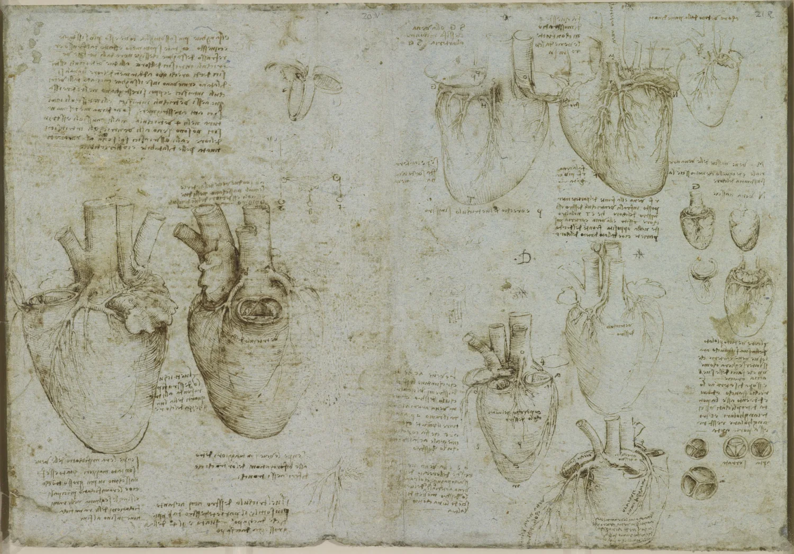
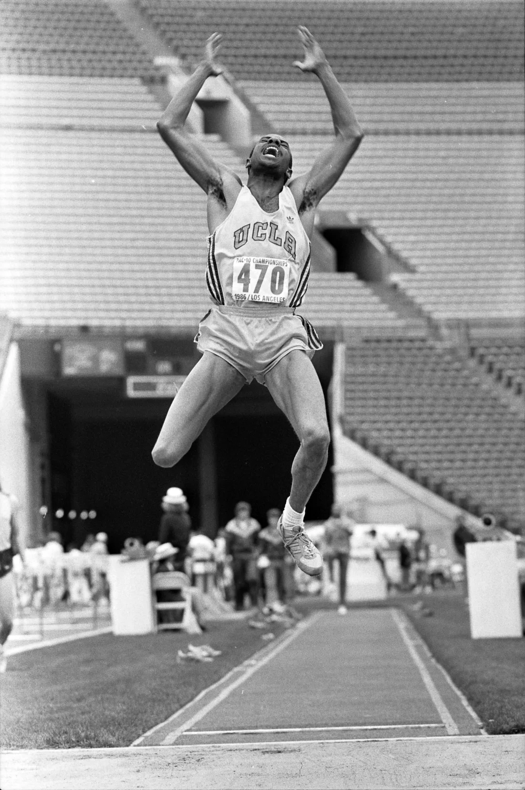

Cardio alongside the weights
The least fit adults in a Cleveland Clinic cohort had about five times the death rate of its elite group after statistical adjustment. The 122,007 participants had been referred for treadmill testing. This comparison cannot tell you how many years a new running habit will add. Mandsager 2018 good
A lifting routine can leave you strong and still short of breath on a hill. This companion to Big Enough covers aerobic training and joint range, with a weekly-minute calculator and a rough heart-rate guide.
Start with the activity target; adapt the rest to your training.
Activity target: U.S. guidelines
What the treadmill measures
Cardiorespiratory fitness is your capacity to deliver and use oxygen during sustained effort. It involves the heart, lungs and working muscles.

Adjusted mortality hazard in the Cleveland Clinic referral cohort, with the elite group as the reference. The low group was below the 25th percentile for its age and sex; elite began at the 97.7th.
Hazard compares the rate of deaths during follow-up. These groups were observed, not assigned an exercise prescription. Mandsager 2018
Fitness can predict survival partly because illness reduces fitness. Genetics and other habits also matter. Statistical adjustment helps, but it cannot remove every difference between these groups. The elite group had lower mortality than the high-fitness group too; this study found no upper limit to the association.
The pattern also appears outside this referral cohort. Kodama's meta-analysis found about 13 percent lower all-cause mortality per one-MET higher aerobic capacity. A MET, or metabolic equivalent, expresses oxygen use relative to a standard resting level. The association was observational. Kodama 2009 good
In exercise trials, both continuous aerobic exercise and intervals improve aerobic capacity. Fitness is trainable. Milanovic 2015 strong
Counting your weekly activity
The U.S. guidelines recommend 150 to 300 minutes of moderate aerobic activity, or 75 to 150 vigorous minutes, plus muscle-strengthening work on at least two days. Smaller amounts still help, and activity beyond that range can provide further benefits. U.S. guidelines strong
Moderate effort lets you talk but makes singing difficult. Vigorous effort leaves room for only a few words before a breath. Count one vigorous minute as two moderate minutes. A gentle stroll may be too light to count. U.S. guidelines
Arem's pooled cohorts, grouped by self-reported leisure activity. Multiples refer to the study's minimum of 7.5 MET-hours a week. Each bar shows adjusted mortality hazard relative to no reported activity.
| Activity category | Hazard ratio | 95% interval |
|---|---|---|
| None | 1.00 | reference |
| Above 0, below 1x | 0.80 | 0.78 to 0.82 |
| 1 to below 2x | 0.69 | 0.67 to 0.70 |
| 2 to below 3x | 0.63 | 0.62 to 0.65 |
| 3 to below 5⅓x | 0.61 | 0.59 to 0.62 |
| 5⅓ to below 10x | 0.61 | 0.58 to 0.64 |
| 10x or more | 0.69 | 0.59 to 0.78 |
The highest category's estimate rose slightly but remained below the inactive reference. This does not establish a personal optimum or prove unlimited exercise harmless. Arem 2015 good
Your weekly aerobic minutes
calculatorModerate minutes + (2 × vigorous minutes). Count each workout once. This checks a guideline target; it does not estimate your mortality risk. U.S. guidelines
A useful step target, with room above it
Seven thousand steps is a reasonable goal for someone starting well below it. Ding's 2025 review included 57 studies; its mortality analysis associated 7,000 steps with 47 percent lower mortality than 2,000. The curve bent around 5,000 to 7,000 for some outcomes, while other associations continued more steadily. The authors explicitly retained 10,000 as a viable goal for active people. Ding 2025 good
Age matters too. Paluch's analysis of 15 cohorts found mortality associations leveling off around 6,000 to 8,000 steps in adults 60 and older, and 8,000 to 10,000 in younger adults. These population patterns leave room for individual differences. Paluch 2022 good
Paluch's four step-count groups. Values are median daily steps and adjusted hazard ratios relative to the lowest group.
Higher groups still had lower estimates. This chart combines ages and does not identify a universal cutoff. 95% intervals: 0.51 to 0.71, 0.49 to 0.62, and 0.39 to 0.57. Paluch 2022
Steady work and intervals
Moderate cardio improves aerobic fitness. Hard intervals can improve it more, on average. Choose a mix that fits your time and recovery. Milanovic 2015
What people mean by zone 2
Zone 2 usually means a sustainable effort below the first marked rise in blood lactate or ventilation. Zone systems differ, and a percentage from a watch cannot locate that threshold precisely. Conversational cycling, jogging or uphill walking can give you steady aerobic work without making every session demanding.
A 2025 narrative review, Much Ado About Zone 2, found insufficient evidence that this exact intensity is uniquely best for mitochondrial capacity or aerobic fitness in the general population. Easy work lets you accumulate minutes and still have energy to lift. Storoschuk 2025 mixed
A rough heart-rate guide
calculatorModerate: 64 to 76% of predicted maximum, or 40 to 59% of heart-rate reserve when resting HR is supplied. Intervals: 90 to 95% of predicted maximum. These are different intensity definitions, not equivalent formulas. Tanaka 2001 Garber 2011 Helgerud 2007
A tested interval session
The Norwegian 4x4 uses four four-minute efforts at about 90 to 95 percent of maximum heart rate, with three easy minutes between efforts. Warm up first and cool down afterward. Use a pace you can sustain through all four repetitions. Helgerud 2007
Forty moderately trained men were assigned to four programs matched for work, three sessions a week for eight weeks.
VO2max is the maximum rate of oxygen use during intense exercise. This trial involved already trained men and three weekly sessions. One weekly session cannot be assumed to reproduce it. Helgerud 2007 good
The 10-20-30 format is another option: 30 seconds easy, 20 moderate, then 10 fast, repeated five times, with recovery between blocks. Its original small trial in trained runners improved fitness despite reduced mileage. The fast sections are demanding; shorter repetitions do not automatically make it a beginner workout. Gunnarsson 2012 mixed
The 80/20 split comes from endurance-athlete training patterns, including Seiler's study of 12 junior cross-country skiers. Its application to a few weekly sessions around a job and lifting remains uncertain. Seiler 2006 mixed
Will cardio eat your gains?
Combining cardio with lifting usually preserves muscle growth and maximal strength. Explosive strength, how quickly you produce force, is more vulnerable.
Schumann's review of 43 studies compared concurrent training with the same strength program alone.
The review did not find a clear running-versus-cycling difference. Its averages cannot rule out interference in a particular demanding program. Schumann 2022 good
If explosive performance matters, separate the sessions. The review found less interference when they were at least three hours apart. For ordinary training, the simpler check is whether cardio leaves you too tired to do your planned lifting. Put your priority first, and adjust the schedule or volume if performance keeps falling.
What about the far end?
High-volume sport has risks of its own. A meta-analysis found higher rates of atrial fibrillation, an irregular heart rhythm, in athletes than in non-athletes. It could not establish a weekly dose at which that risk begins. That is a reason to take symptoms and recovery seriously, without treating a normal walking or cycling routine as dangerous. Newman 2021 mixed
The mortality cohorts leave sparse data at the extreme. Their favorable survival associations do not settle questions about overuse injuries or heart rhythm.
What a stretch can change
Stretching increases range of motion. It does not reliably prevent sports injuries or next-day soreness.
Part of the range gain comes from tolerating more stretch. A 2025 synthesis also found reduced passive stiffness. Its controlled studies did not show a clear increase in fascicle length, the length of bundles of muscle fibers. An earlier review found small structural changes, especially with larger stretching doses. The structural findings remain unsettled. Ingram 2025 Panidi 2023 mixed
A schematic of a straight-leg raise before and after flexibility improves. The leg moves farther; the drawing does not measure muscle length or stiffness.
Range, tolerance and muscle structure need separate measurements.
Injury prevention needs its own evidence
Lauersen's review of 25 trials and 26,610 participants found no clear injury reduction from stretching programs. Strength-based prevention programs performed better. These were different sets of trials, not one head-to-head contest between stretching and lifting. Lauersen 2014 good
Each estimate compares its program with control. A ratio of 1 means no difference. The strength estimate concerns specific prevention programs, not a promise that any gym routine cuts injuries by two thirds. Lauersen 2014
Soreness and the warm-up
A Cochrane review found no clinically important reduction in delayed muscle soreness from stretching before or after exercise. Stretch if you want more range or like how it feels; soreness prevention is a poor reason to add it. Herbert 2011 good
Long static holds immediately before a maximal effort can temporarily reduce performance. The effect is smaller with brief holds, especially when followed by an active warm-up. For lifting, prepare with lighter practice sets and do prolonged flexibility work afterward or separately. Behm 2016 good
Foam rolling can give a small, short-term increase in range and may reduce perceived soreness. The mechanism remains uncertain. Evidence for these effects does not establish the popular claim that a roller breaks up adhesions or permanently releases fascia. Wiewelhove 2019 mixed
Flexibility and survival
The sitting-rising test and the Flexindex study both associated better test scores with lower mortality. These were cohort studies, not stretching interventions. Getting up from the floor involves balance and strength as well as range; flexibility scores can also reflect existing health. Statistical adjustment does not show that increasing flexibility through stretching extends life. Brito 2014 Araujo 2024 mixed
Strength work can help too
Strength training can improve range of motion. Afonso's review of 11 trials, involving 452 people, found no clear difference between strength training and stretching in their range gains. The programs and participants varied considerably, so it does not establish that any lift replaces every stretch. Afonso 2021 good
A controlled squat lets you practice the hip and ankle range used in that squat. It does not automatically give you the shoulder range for overhead work. Use a load and range you can control comfortably.

Stretch a restriction you can name
If an ankle restriction keeps your heel from staying down in a squat, targeted stretching is a reasonable experiment. Recheck the squat after working on ankle range. Avoid forcing a joint through pain.
The ACSM flexibility recommendation is about 60 seconds total per exercise on at least two days a week. You can divide that time across shorter holds. Treat it as a starting dose, rather than a requirement to hold every position for a full minute. Garber 2011
Prevention programs do more than stretch
The FIFA 11+ combines running, strength, balance and jumping exercises. In Soligard's trial in teenage female soccer players, it reduced injuries overall, though the primary lower-extremity injury result was uncertain. That supports the program in its tested setting; it does not give a few leg swings the same effect. Soligard 2008 good
Nordic hamstring curls have a promising but contested prevention record. A 2019 review estimated roughly half as many hamstring injuries in programs including them. A later reanalysis restricted to randomized trials found the evidence inconclusive. They can be part of hamstring training, without treating the headline reduction as guaranteed. van Dyk 2019 Impellizzeri 2021 mixed
You can also do yoga because you enjoy it. For chronic non-specific low back pain, a Cochrane review found small average improvements compared with no exercise, generally below its threshold for clinical importance. Stretching alone and a whole yoga program are different interventions. Wieland 2022 mixed
A week you can count
This example fits around three lifting days and totals 150 moderate-equivalent minutes. Adapt it to your current fitness.
| Day | Lifting | Aerobic work | Count |
|---|---|---|---|
| Mon | Full body | Brisk walk, 15 min | 15 |
| Tue | Off | Moderate cycling, 30 min | 30 |
| Wed | Full body | Brisk walk, 15 min | 15 |
| Thu | Off | Vigorous exercise, 15 min total, or moderate work, 30 min | 30 |
| Fri | Full body | Brisk walk, 15 min | 15 |
| Sat | Off | Moderate walk or ride, 45 min | 45 |
| Sun | Rest | Optional easy movement | 0 counted |
| Moderate-equivalent minutes | 150 | ||
Warm up before lifting with easier movement and practice sets. Add flexibility work where it serves a specific need. Thursday's vigorous minutes can be broken into intervals; easy recovery minutes count only if they reach moderate intensity. If you use the 4x4 instead, its four work bouts give 16 vigorous minutes, with warm-up and recovery time added separately.
You do not have to begin with this whole week. An inactive person can start with short comfortable walks and increase duration or frequency gradually. Hard intervals are optional. Walking steps and walking minutes describe the same activity in different ways, so do not add them twice when counting your week. U.S. guidelines
Sources and their limits
Cohorts can show who tends to live longer. Trials can test whether training changes fitness or range. The evidence labels apply to the stated claim, not to every possible interpretation of the paper.
The full list, 28 sources
- Fitness and activity
- Mandsager 2018. Association of cardiorespiratory fitness with long-term mortality among adults undergoing exercise treadmill testing. JAMA Network Open. Source
- Kodama 2009. Cardiorespiratory fitness as a quantitative predictor of mortality and cardiovascular events. JAMA. Source
- Arem 2015. Leisure time physical activity and mortality: a pooled dose-response analysis. JAMA Internal Medicine. Source
- U.S. guidelines. Physical Activity Guidelines for Americans, 2nd edition (2018). U.S. Department of Health and Human Services. Source
- Paluch 2022. Daily steps and all-cause mortality: 15 international cohorts. Lancet Public Health. Source
- Ding 2025. Daily steps and health outcomes in adults: dose-response meta-analysis. Lancet Public Health. Source
- Intensity and combining training
- Storoschuk 2025. Much Ado About Zone 2. Sports Medicine. Source
- Tanaka 2001. Age-predicted maximal heart rate revisited. Journal of the American College of Cardiology. Source
- Garber 2011. Quantity and quality of exercise for developing and maintaining fitness in apparently healthy adults: ACSM position stand. Medicine & Science in Sports & Exercise. Source
- Helgerud 2007. Aerobic high-intensity intervals improve VO2max more than moderate training. Medicine & Science in Sports & Exercise. Source
- Milanovic 2015. Interval and continuous endurance training for VO2max: controlled-trial meta-analysis. Sports Medicine. Source
- Gunnarsson 2012. The 10-20-30 training concept in moderately trained runners. Journal of Applied Physiology. Source
- Seiler 2006. Training-intensity distribution in elite endurance athletes. Scandinavian Journal of Medicine & Science in Sports. Source
- Schumann 2022. Compatibility of concurrent aerobic and strength training: updated meta-analysis. Sports Medicine. Source
- Newman 2021. Risk of atrial fibrillation in athletes: meta-analysis. British Journal of Sports Medicine. Source
- Range, stretching and injury
- Ingram 2025. Mechanisms underlying range of motion improvements following static stretching. Sports Medicine. Source
- Panidi 2023. Muscle architecture adaptations to static stretching training. Sports Medicine - Open. Source
- Lauersen 2014. Exercise interventions to prevent sports injuries: randomized-trial meta-analysis. British Journal of Sports Medicine. Source
- Herbert 2011. Stretching to prevent or reduce muscle soreness after exercise. Cochrane Database of Systematic Reviews. Source
- Behm 2016. Acute effects of stretching on performance, range and injury incidence. Applied Physiology, Nutrition, and Metabolism. Source
- Wiewelhove 2019. Foam rolling on performance and recovery: meta-analysis. Frontiers in Physiology. Source
- Brito 2014. Ability to sit and rise from the floor as a predictor of all-cause mortality. European Journal of Preventive Cardiology. Source
- Araujo 2024. Reduced body flexibility and survival in middle-aged adults: prospective cohort. Scandinavian Journal of Medicine & Science in Sports. Source
- Afonso 2021. Strength training versus stretching for range of motion. Healthcare. Source
- Soligard 2008. Comprehensive warm-up to prevent injuries in young female footballers. BMJ. Source
- van Dyk 2019. Nordic hamstring exercise and hamstring injuries: meta-analysis. British Journal of Sports Medicine. Source
- Impellizzeri 2021. A reappraisal of Nordic hamstring injury-prevention evidence. Journal of Clinical Epidemiology. Source
- Wieland 2022. Yoga for chronic non-specific low back pain. Cochrane Database of Systematic Reviews. Source